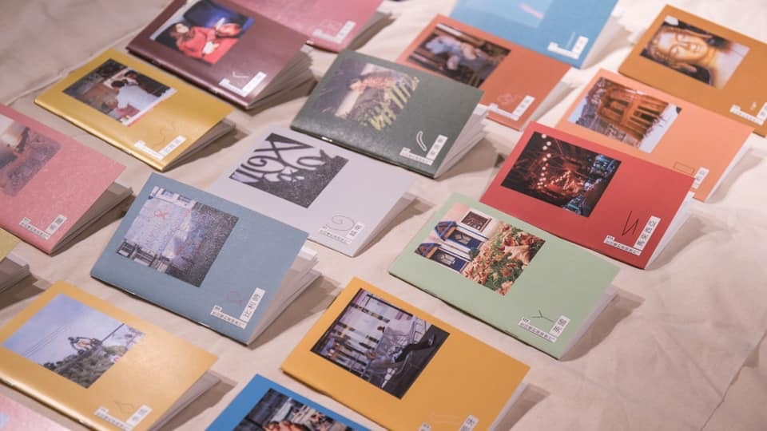
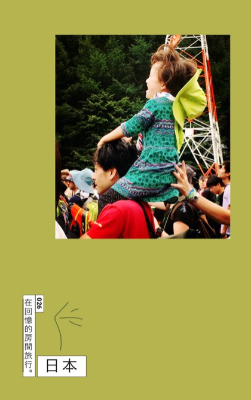
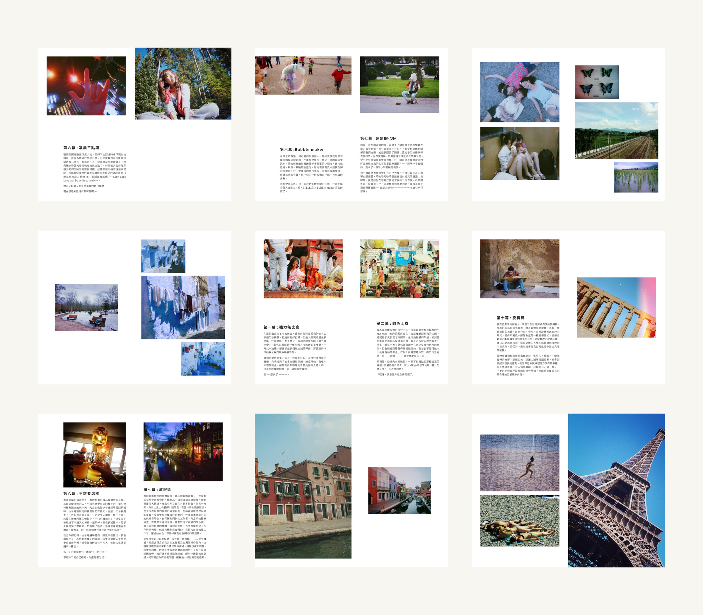
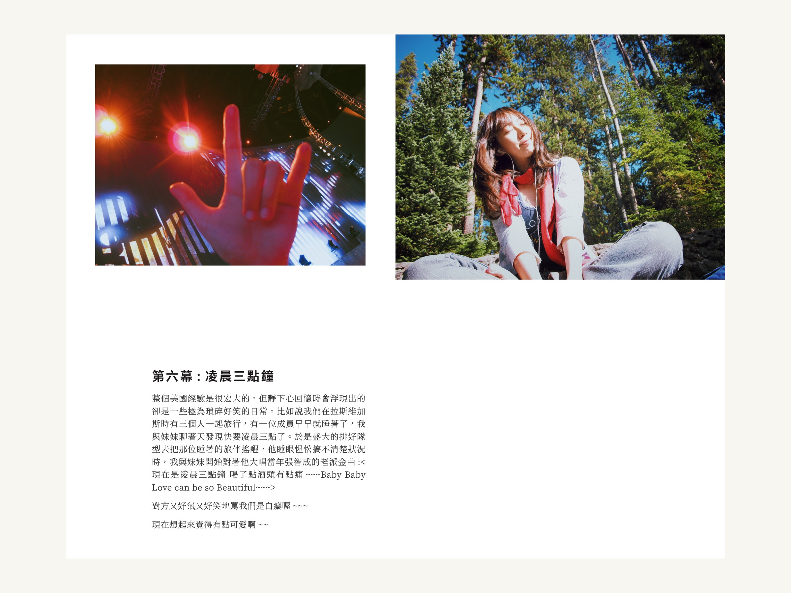
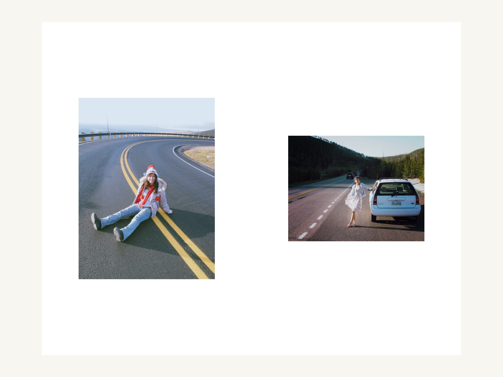
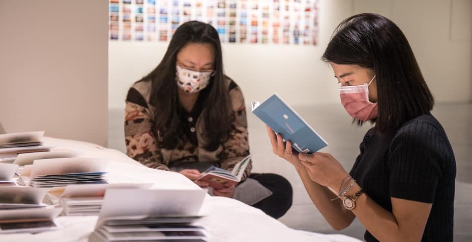
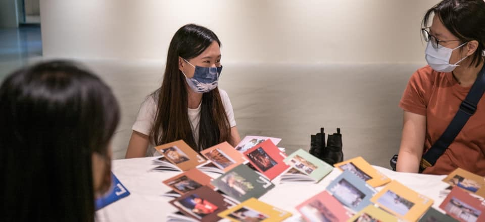
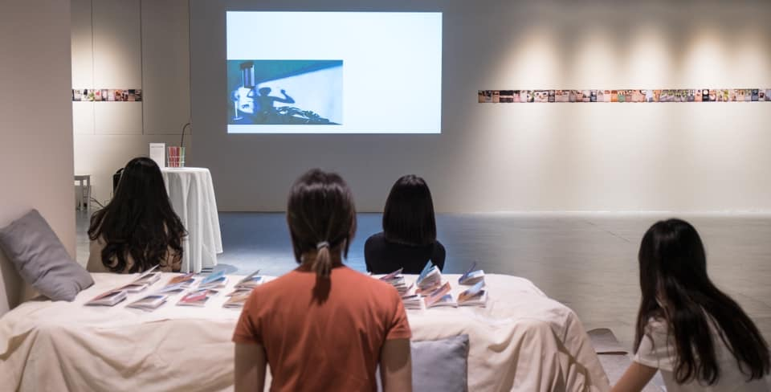

Travelling
in My Room
Thirty books, one for each country, made from Kari's photographs and writing during a hundred days of isolation.




About
the project
During a hundred days of isolation in 2021, Kari revisited travel memories from thirty countries through daily meditation. She provided the photographs and texts. I developed how they could take physical form: a series of thirty books, one per country, laid out as one system.
For each cover I chose a photograph in response to her writing, drew a small symbol for the place from its imagery, and gave each book its own colour.
The first question was whether the stories of thirty countries should be one large book or a series, and if a series, how each book could vary within shared rules. For each country I read the story, studied the photographs, and drew a symbol picked from the imagery, with a colour to match, so that each cover echoes its story. I hoped readers could step inside Kari's mind and explore it freely.



In the exhibition
The books were displayed flat on tables and shelves, for visitors to pick up and read.


